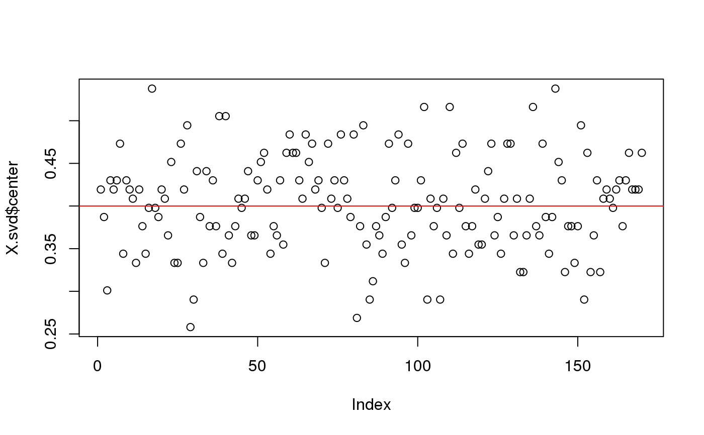
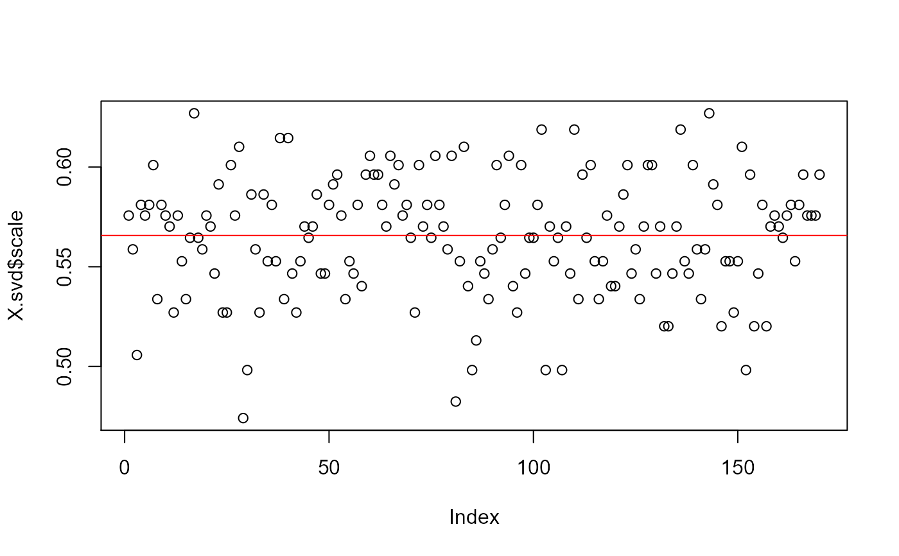

Binomial(n, p) scaling where n is fixed and p is estimated.
snp_scaleAlpha(alpha = -1)
snp_scaleBinom(nploidy = 2)Assumes that the average contribution (e.g. heritability)
of a SNP of frequency \(p\) is proportional to
\([2p(1-p)]^{1+\alpha}\). The center is then \(2 p\) and the scale
is \([2p(1-p)]^{-\alpha/2}\). Default is -1.
Number of trials, parameter of the binomial distribution.
Default is 2, which corresponds to diploidy, such as for the human genome.
A new function that returns a data.frame of two vectors
"center" and "scale" which are of the length of ind.col.
You will probably not use this function as is but as the
fun.scaling parameter of other functions of package bigstatsr.
This scaling is widely used for SNP arrays. Patterson N, Price AL, Reich D (2006). Population Structure and Eigenanalysis. PLoS Genet 2(12): e190. doi:10.1371/journal.pgen.0020190 .
set.seed(1)
a <- matrix(0, 93, 170)
p <- 0.2
a[] <- rbinom(length(a), 2, p)
X <- add_code256(big_copy(a, type = "raw"), code = c(0, 1, 2, rep(NA, 253)))
X.svd <- big_SVD(X, fun.scaling = snp_scaleBinom())
str(X.svd)
#> List of 5
#> $ d : num [1:10] 22.2 21.6 21.5 21.2 20.8 ...
#> $ u : num [1:93, 1:10] 0.0732 -0.0378 -0.0762 0.0364 0.0444 ...
#> $ v : num [1:170, 1:10] 0.1075 -0.0331 0.0592 -0.0504 0.1216 ...
#> $ center: num [1:170] 0.419 0.387 0.301 0.43 0.419 ...
#> $ scale : num [1:170] 0.576 0.559 0.506 0.581 0.576 ...
#> - attr(*, "class")= chr "big_SVD"
plot(X.svd$center)
abline(h = 2 * p, col = "red")

plot(X.svd$scale)
abline(h = sqrt(2 * p * (1 - p)), col = "red")
